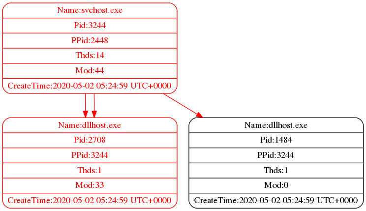

这是一份由 DigDog 产品为您生成的恶意软件检测报告
基本情况
受理时间：2020-05-22_12:33:51
待检材料：/home/float/Desktop/testing/corebot 内存镜像文件
检测时间：2020-05-22_12:43:12
检测方：DigDog 恶意软件自动检测产品
检测分析报告
内存系统信息
该部分提供内存转储文件的基本属性信息
可能的操作系统版本 : Win2008SP1x86, Win7SP1x64, Win7SP0x64
DTB目录表基址 : 1601536
KDBG信息 : 272678948753568
处理器核数 : 2
Windows服务包版本 : 1
镜像日期和时间 : 2020-05-02 05:27:47 UTC+0000
镜像本地日期和时间 : 2020-05-02 13:27:47 +0800
|
恶意进程信息
该部分提供本产品扫描出的恶意进程信息。具体包括恶意进程命令行信息、恶意进程DLL加载信息、DLL对应函数加载信息以及恶意VAD节点信息
恶意进程命令行信息
该部分提供本产品检测出的恶意进程的进程ID、进程名和命令行加载信息
PID 进程名 命令行参数
------- ------------------------- ------------------------------
2708 dllhost.exe "C:\Windows\system32\dllhost.exe"
3244 svchost.exe "C:\Windows\system32\svchost.exe"
|
DLL信息
该部分提供恶意进程加载的动态链接库信息，包括进程ID、进程名、文件大小、DLL加载名称及加载次数
PID 进程名 加载次数 文件大小 Dll名称
------- ------------------------- ------------- -------------- ------------------------------
3244 svchost.exe 65535 32768 C:\Windows\SysWOW64\svchost.exe
3244 svchost.exe 65535 1740800 C:\Windows\SYSTEM32\ntdll.dll
3244 svchost.exe 3 258048 C:\Windows\SYSTEM32\wow64.dll
3244 svchost.exe 1 376832 C:\Windows\SYSTEM32\wow64win.dll
3244 svchost.exe 1 32768 C:\Windows\SYSTEM32\wow64cpu.dll
3244 svchost.exe 65535 32768 C:\Windows\SysWOW64\svchost.exe
3244 svchost.exe 65535 1572864 C:\Windows\SysWOW64\ntdll.dll
3244 svchost.exe 65535 1114112 C:\Windows\syswow64\kernel32.dll
3244 svchost.exe 65535 286720 C:\Windows\syswow64\KERNELBASE.dll
3244 svchost.exe 65535 704512 C:\Windows\syswow64\msvcrt.dll
3244 svchost.exe 65535 102400 C:\Windows\SysWOW64\sechost.dll
3244 svchost.exe 65535 983040 C:\Windows\syswow64\RPCRT4.dll
3244 svchost.exe 65535 393216 C:\Windows\syswow64\SspiCli.dll
3244 svchost.exe 65535 49152 C:\Windows\syswow64\CRYPTBASE.dll
3244 svchost.exe 70 1048576 C:\Windows\syswow64\USER32.dll
3244 svchost.exe 67 589824 C:\Windows\syswow64\GDI32.dll
3244 svchost.exe 17 40960 C:\Windows\syswow64\LPK.dll
3244 svchost.exe 17 643072 C:\Windows\syswow64\USP10.dll
3244 svchost.exe 21 655360 C:\Windows\syswow64\ADVAPI32.dll
3244 svchost.exe 2 393216 C:\Windows\system32\IMM32.DLL
3244 svchost.exe 1 835584 C:\Windows\syswow64\MSCTF.dll
3244 svchost.exe 1 12886016 C:\Windows\syswow64\SHELL32.dll
3244 svchost.exe 3 356352 C:\Windows\syswow64\SHLWAPI.dll
3244 svchost.exe 4 1425408 C:\Windows\syswow64\ole32.dll
3244 svchost.exe 2 360448 C:\Windows\SysWOW64\WINHTTP.dll
3244 svchost.exe 2 323584 C:\Windows\SysWOW64\webio.dll
3244 svchost.exe 1 20480 C:\Windows\syswow64\PSAPI.DLL
3244 svchost.exe 1 1167360 C:\Windows\syswow64\CRYPT32.dll
3244 svchost.exe 1 49152 C:\Windows\syswow64\MSASN1.dll
3244 svchost.exe 3 278528 C:\Windows\SysWOW64\DNSAPI.dll
3244 svchost.exe 12 217088 C:\Windows\syswow64\WS2_32.dll
3244 svchost.exe 17 24576 C:\Windows\syswow64\NSI.dll
3244 svchost.exe 2 1638400 C:\Windows\WinSxS\x86_microsoft.windows.gdiplus_6595b64144ccf1df_1.1.7601.17514_none_72d18a4386696c80\gdiplus.dll
3244 svchost.exe 2 524288 C:\Windows\system32\uxtheme.dll
3244 svchost.exe 1 962560 C:\Windows\SysWOW64\dbghelp.dll
3244 svchost.exe 65535 311296 C:\Windows\system32\apphelp.dll
3244 svchost.exe 1 32768 C:\Windows\SysWOW64\credssp.dll
3244 svchost.exe 4 245760 C:\Windows\system32\mswsock.dll
3244 svchost.exe 1 20480 C:\Windows\System32\wshtcpip.dll
3244 svchost.exe 1 24576 C:\Windows\System32\wship6.dll
3244 svchost.exe 1 114688 C:\Windows\SysWOW64\IPHLPAPI.DLL
3244 svchost.exe 1 28672 C:\Windows\SysWOW64\WINNSI.DLL
3244 svchost.exe 1 24576 C:\Windows\SysWOW64\rasadhlp.dll
3244 svchost.exe 1 229376 C:\Windows\System32\fwpuclnt.dll
2708 dllhost.exe 65535 20480 C:\Windows\SysWOW64\dllhost.exe
2708 dllhost.exe 65535 1740800 C:\Windows\SYSTEM32\ntdll.dll
2708 dllhost.exe 3 258048 C:\Windows\SYSTEM32\wow64.dll
2708 dllhost.exe 1 376832 C:\Windows\SYSTEM32\wow64win.dll
2708 dllhost.exe 1 32768 C:\Windows\SYSTEM32\wow64cpu.dll
2708 dllhost.exe 65535 20480 C:\Windows\SysWOW64\dllhost.exe
2708 dllhost.exe 65535 1572864 C:\Windows\SysWOW64\ntdll.dll
2708 dllhost.exe 65535 1114112 C:\Windows\syswow64\kernel32.dll
2708 dllhost.exe 65535 286720 C:\Windows\syswow64\KERNELBASE.dll
2708 dllhost.exe 65535 704512 C:\Windows\syswow64\msvcrt.dll
2708 dllhost.exe 65535 1425408 C:\Windows\syswow64\ole32.dll
2708 dllhost.exe 65535 589824 C:\Windows\syswow64\GDI32.dll
2708 dllhost.exe 65535 1048576 C:\Windows\syswow64\USER32.dll
2708 dllhost.exe 65535 655360 C:\Windows\syswow64\ADVAPI32.dll
2708 dllhost.exe 65535 102400 C:\Windows\SysWOW64\sechost.dll
2708 dllhost.exe 65535 983040 C:\Windows\syswow64\RPCRT4.dll
2708 dllhost.exe 65535 393216 C:\Windows\syswow64\SspiCli.dll
2708 dllhost.exe 65535 49152 C:\Windows\syswow64\CRYPTBASE.dll
2708 dllhost.exe 65535 40960 C:\Windows\syswow64\LPK.dll
2708 dllhost.exe 65535 643072 C:\Windows\syswow64\USP10.dll
2708 dllhost.exe 2 393216 C:\Windows\system32\IMM32.DLL
2708 dllhost.exe 1 835584 C:\Windows\syswow64\MSCTF.dll
2708 dllhost.exe 1 12886016 C:\Windows\syswow64\SHELL32.dll
2708 dllhost.exe 2 356352 C:\Windows\syswow64\SHLWAPI.dll
2708 dllhost.exe 1 360448 C:\Windows\SysWOW64\WINHTTP.dll
2708 dllhost.exe 1 323584 C:\Windows\SysWOW64\webio.dll
2708 dllhost.exe 1 20480 C:\Windows\syswow64\PSAPI.DLL
2708 dllhost.exe 1 1167360 C:\Windows\syswow64\CRYPT32.dll
2708 dllhost.exe 1 49152 C:\Windows\syswow64\MSASN1.dll
2708 dllhost.exe 1 278528 C:\Windows\SysWOW64\DNSAPI.dll
2708 dllhost.exe 2 217088 C:\Windows\syswow64\WS2_32.dll
2708 dllhost.exe 3 24576 C:\Windows\syswow64\NSI.dll
2708 dllhost.exe 1 1638400 C:\Windows\WinSxS\x86_microsoft.windows.gdiplus_6595b64144ccf1df_1.1.7601.17514_none_72d18a4386696c80\gdiplus.dll
|
加载函数信息
该部分提供恶意进程加载DLL中的函数信息
进程PID: 2708 进程名: dllhost.exe
[加载DLL名称：KERNEL32.dll]
| - TerminateProcess
| - GetCurrentProcess
| - HeapSetInformation
| - GetSystemTimeAsFileTime
| - GetCurrentProcessId
| - GetCurrentThreadId
| - GetTickCount
| - QueryPerformanceCounter
| - GetModuleHandleA
| - SetUnhandledExceptionFilter
| - GetStartupInfoW
| - InterlockedCompareExchange
| - Sleep
| - InterlockedExchange
| - UnhandledExceptionFilter
[加载DLL名称：msvcrt.dll]
| - __set_app_type
| - ?terminate@@YAXXZ
| - _except_handler4_common
| - _controlfp
| - __p__fmode
| - _wcsicmp
| - __wgetmainargs
| - _cexit
| - _exit
| - _XcptFilter
| - exit
| - __p__commode
| - __setusermatherr
| - _amsg_exit
| - _initterm
| - _wcmdln
[加载DLL名称：ole32.dll]
| - CoInitializeEx
| - CoRegisterSurrogateEx
| - CoUninitialize
| - CLSIDFromString
[加载DLL名称：ntdll.dll]
| - NtSetInformationProcess
进程PID: 3244 进程名: svchost.exe
[加载DLL名称：msvcrt.dll]
| - __wgetmainargs
| - _exit
| - _XcptFilter
| - exit
| - _initterm
| - _amsg_exit
| - __setusermatherr
| - memcpy
| - _controlfp
| - _except_handler4_common
| - ?terminate@@YAXXZ
| - __set_app_type
| - __p__fmode
| - __p__commode
| - _cexit
[加载DLL名称：API-MS-Win-Core-ProcessThreads-L1-1-0.dll]
| - TerminateProcess
| - GetCurrentProcess
| - OpenProcessToken
| - GetCurrentProcessId
| - GetCurrentThreadId
[加载DLL名称：KERNEL32.dll]
| - LocalAlloc
| - CloseHandle
| - DelayLoadFailureHook
| - GetProcAddress
| - GetLastError
| - FreeLibrary
| - InterlockedCompareExchange
| - LoadLibraryExA
| - InterlockedExchange
| - Sleep
| - SetUnhandledExceptionFilter
| - GetModuleHandleA
| - QueryPerformanceCounter
| - GetTickCount
| - GetSystemTimeAsFileTime
| - UnhandledExceptionFilter
| - DeactivateActCtx
| - LoadLibraryExW
| - ActivateActCtx
| - LeaveCriticalSection
| - lstrcmpW
| - EnterCriticalSection
| - RegCloseKey
| - RegOpenKeyExW
| - HeapSetInformation
| - lstrcmpiW
| - lstrlenW
| - LCMapStringW
| - RegQueryValueExW
| - ReleaseActCtx
| - CreateActCtxW
| - ExpandEnvironmentStringsW
| - GetCommandLineW
| - ExitProcess
| - SetProcessAffinityUpdateMode
| - RegDisablePredefinedCacheEx
| - InitializeCriticalSection
| - GetProcessHeap
| - SetErrorMode
| - RegisterWaitForSingleObjectEx
| - LocalFree
| - HeapFree
| - WideCharToMultiByte
| - HeapAlloc
[加载DLL名称：ntdll.dll]
| - RtlAllocateHeap
| - RtlLengthRequiredSid
| - RtlSubAuthoritySid
| - RtlInitializeSid
| - RtlCopySid
| - RtlSubAuthorityCountSid
| - RtlInitializeCriticalSection
| - RtlSetProcessIsCritical
| - RtlImageNtHeader
| - RtlUnhandledExceptionFilter
| - EtwEventWrite
| - EtwEventEnabled
| - EtwEventRegister
| - RtlFreeHeap
[加载DLL名称：API-MS-Win-Security-Base-L1-1-0.dll]
| - SetSecurityDescriptorDacl
| - AddAccessAllowedAce
| - SetSecurityDescriptorOwner
| - SetSecurityDescriptorGroup
| - GetTokenInformation
| - InitializeSecurityDescriptor
| - GetLengthSid
| - InitializeAcl
[加载DLL名称：API-MS-WIN-Service-Core-L1-1-0.dll]
| - StartServiceCtrlDispatcherW
| - SetServiceStatus
[加载DLL名称：API-MS-WIN-Service-winsvc-L1-1-0.dll]
| - RegisterServiceCtrlHandlerW
[加载DLL名称：RPCRT4.dll]
| - RpcMgmtSetServerStackSize
| - I_RpcMapWin32Status
| - RpcServerUnregisterIf
| - RpcMgmtWaitServerListen
| - RpcMgmtStopServerListening
| - RpcServerUnregisterIfEx
| - RpcServerRegisterIf
| - RpcServerUseProtseqEpW
| - RpcServerListen
|
恶意节点信息
该部分提供恶意VAD节点信息，包括进程ID、VAD节点地址及节点详细内容
进程 3244 - VAD节点地址 0x150000
00000000: 4D 5A 90 00 03 00 00 00 04 00 00 00 FF FF 00 00 MZ..............
00000010: B8 00 00 00 00 00 00 00 40 00 00 00 00 00 00 00 ........@.......
00000020: 00 00 00 00 00 00 00 00 00 00 00 00 00 00 00 00 ................
00000030: 00 00 00 00 00 00 00 00 00 00 00 00 F8 00 00 00 ................
00000040: 0E 1F BA 0E 00 B4 09 CD 21 B8 01 4C CD 21 54 68 ........!..L.!Th
00000050: 69 73 20 70 72 6F 67 72 61 6D 20 63 61 6E 6E 6F is program canno
00000060: 74 20 62 65 20 72 75 6E 20 69 6E 20 44 4F 53 20 t be run in DOS
00000070: 6D 6F 64 65 2E 0D 0D 0A 24 00 00 00 00 00 00 00 mode....$.......
00000080: D2 B4 F6 91 96 D5 98 C2 96 D5 98 C2 96 D5 98 C2 ................
00000090: 9B 87 78 C2 95 D5 98 C2 54 39 56 C2 9F D5 98 C2 ..x.....T9V.....
000000A0: 9F AD 0D C2 9B D5 98 C2 9F AD 1C C2 99 D5 98 C2 ................
000000B0: F9 A3 04 C2 94 D5 98 C2 9F AD 1B C2 D6 D5 98 C2 ................
000000C0: 9F AD 0B C2 B5 D5 98 C2 96 D5 99 C2 E7 D4 98 C2 ................
000000D0: B1 13 E6 C2 97 D5 98 C2 9B 87 7D C2 CB D5 98 C2 ..........}.....
000000E0: 9B 87 46 C2 97 D5 98 C2 52 69 63 68 96 D5 98 C2 ..F.....Rich....
000000F0: 00 00 00 00 00 00 00 00 50 45 00 00 4C 01 06 00 ........PE..L...
进程 3244 - VAD节点地址 0x8d0000
00000000: 4D 5A 90 00 03 00 00 00 04 00 00 00 FF FF 00 00 MZ..............
00000010: B8 00 00 00 00 00 00 00 40 00 00 00 00 00 00 00 ........@.......
00000020: 00 00 00 00 00 00 00 00 00 00 00 00 00 00 00 00 ................
00000030: 00 00 00 00 00 00 00 00 00 00 00 00 F8 00 00 00 ................
00000040: 0E 1F BA 0E 00 B4 09 CD 21 B8 01 4C CD 21 54 68 ........!..L.!Th
00000050: 69 73 20 70 72 6F 67 72 61 6D 20 63 61 6E 6E 6F is program canno
00000060: 74 20 62 65 20 72 75 6E 20 69 6E 20 44 4F 53 20 t be run in DOS
00000070: 6D 6F 64 65 2E 0D 0D 0A 24 00 00 00 00 00 00 00 mode....$.......
00000080: D2 B4 F6 91 96 D5 98 C2 96 D5 98 C2 96 D5 98 C2 ................
00000090: 9B 87 78 C2 95 D5 98 C2 54 39 56 C2 9F D5 98 C2 ..x.....T9V.....
000000A0: 9F AD 0D C2 9B D5 98 C2 9F AD 1C C2 99 D5 98 C2 ................
000000B0: F9 A3 04 C2 94 D5 98 C2 9F AD 1B C2 D6 D5 98 C2 ................
000000C0: 9F AD 0B C2 B5 D5 98 C2 96 D5 99 C2 E7 D4 98 C2 ................
000000D0: B1 13 E6 C2 97 D5 98 C2 9B 87 7D C2 CB D5 98 C2 ..........}.....
000000E0: 9B 87 46 C2 97 D5 98 C2 52 69 63 68 96 D5 98 C2 ..F.....Rich....
000000F0: 00 00 00 00 00 00 00 00 50 45 00 00 4C 01 06 00 ........PE..L...
进程 2708 - VAD节点地址 0x70000
00000000: 4D 5A 90 00 03 00 00 00 04 00 00 00 FF FF 00 00 MZ..............
00000010: B8 00 00 00 00 00 00 00 40 00 00 00 00 00 00 00 ........@.......
00000020: 00 00 00 00 00 00 00 00 00 00 00 00 00 00 00 00 ................
00000030: 00 00 00 00 00 00 00 00 00 00 00 00 F8 00 00 00 ................
00000040: 0E 1F BA 0E 00 B4 09 CD 21 B8 01 4C CD 21 54 68 ........!..L.!Th
00000050: 69 73 20 70 72 6F 67 72 61 6D 20 63 61 6E 6E 6F is program canno
00000060: 74 20 62 65 20 72 75 6E 20 69 6E 20 44 4F 53 20 t be run in DOS
00000070: 6D 6F 64 65 2E 0D 0D 0A 24 00 00 00 00 00 00 00 mode....$.......
00000080: D2 B4 F6 91 96 D5 98 C2 96 D5 98 C2 96 D5 98 C2 ................
00000090: 9B 87 78 C2 95 D5 98 C2 54 39 56 C2 9F D5 98 C2 ..x.....T9V.....
000000A0: 9F AD 0D C2 9B D5 98 C2 9F AD 1C C2 99 D5 98 C2 ................
000000B0: F9 A3 04 C2 94 D5 98 C2 9F AD 1B C2 D6 D5 98 C2 ................
000000C0: 9F AD 0B C2 B5 D5 98 C2 96 D5 99 C2 E7 D4 98 C2 ................
000000D0: B1 13 E6 C2 97 D5 98 C2 9B 87 7D C2 CB D5 98 C2 ..........}.....
000000E0: 9B 87 46 C2 97 D5 98 C2 52 69 63 68 96 D5 98 C2 ..F.....Rich....
000000F0: 00 00 00 00 00 00 00 00 50 45 00 00 4C 01 06 00 ........PE..L...
|
恶意进程可执行文件
已将可疑进程导出至本地，用户可自行查看分析
PS树状图
该部分提供恶意进程的调用链信息，每个进程块包含进程的相关信息，恶意节点和恶意调用链均以红色醒目标记

关键注册表信息
该部分提供系统自启动项的相关信息，包含注册表内容及对应表项名称
注册表内容 注册表项名称
------------------------------------------ --------------------
"C:\Foxmail 7.2\Foxmail.exe" -min� Foxmail
C:\Users\float\AppData\Local\Microsoft\2a414c38-29e6-11b1-8cb1-d6fd5cf6bf85\14874123-4d30-4258-a4ea-44402b637289.exe� 7513a1bb-6643-1000-83fc-964fc718928f
|
网络行为信息
网络连接情况
该部分提供恶意进程可疑网络连接情况，具体包括进程ID、本地IP及端口信息、远程IP及端口信息以及协议类型
PID 本地地址 本地端口 协议类型 远程地址 远程端口
------- ----------------- -------------- ------------- ----------------- ----------
3244 10.10.10.26 49317 TCPv4 216.218.185.162 80
|
域名及DGA域名判断
该部分提供DNS反查询及DGA域名家族判断结果，包括可疑DNS域名、对应创建时间。如果该域名经检测为DGA域名，则提供对应的恶意软件家族信息.
可疑IP域名查询 创建时间 恶意软件家族
---------------------------------------- ------------------------------ --------------------
xdhvqbparcf.net 2020-05-22 03:34:22 nymaim_dga_949c0408;
vzvuofa.net 2020-05-22 03:22:30 nymaim_dga_949c0408;
madnkgjblczb.net 2020-05-22 03:03:42 nymaim_dga_949c0408;
xrpjxyrga.net 2020-05-22 03:34:23 nymaim_dga_949c0408;
bodwz.net 2020-05-22 03:07:41 nymaim_dga_949c0408;
kurzqwd.info 2020-05-21 22:49:04 nymaim_dga_03141fc0; nymaim_dga_03141fc0;
ibexes61.cenon.ritma.pw 2020-05-22 10:17:35 无结果
avhunfofuyki.net 2020-05-22 03:07:35 nymaim_dga_949c0408;
izdptykodj.com 2020-05-21 22:49:03 nymaim_dga_03141fc0; nymaim_dga_03141fc0;
dplezaidt.com 2020-05-21 22:49:06 nymaim_dga_03141fc0; nymaim_dga_03141fc0;
|
综合分析报告
经过DigDog检测分析，待检材料/home/float/Desktop/testing/corebot中存在利用HBCIA技术的恶意软件痕迹。经检测，恶意进程ID如下：2708, 3244，分析人员需要重点关注这些恶意进程的命令行执行信息、DLL相关信息、DLL加载函数以及虚拟地址描述符详细信息。同时本产品提供恶意进程的调用信息，分析人员可快速把握恶意进程的调用关系。本产品已将恶意进程以可执行文件的形式导出至本地，分析人员可以在路径/home/float/PycharmProjects/DigDogProject/MalProcessResult/corebot_2020-05-22_12:33:51下根据需求自行分析查看。此外，经检测，该恶意软件存在相关网络活动。